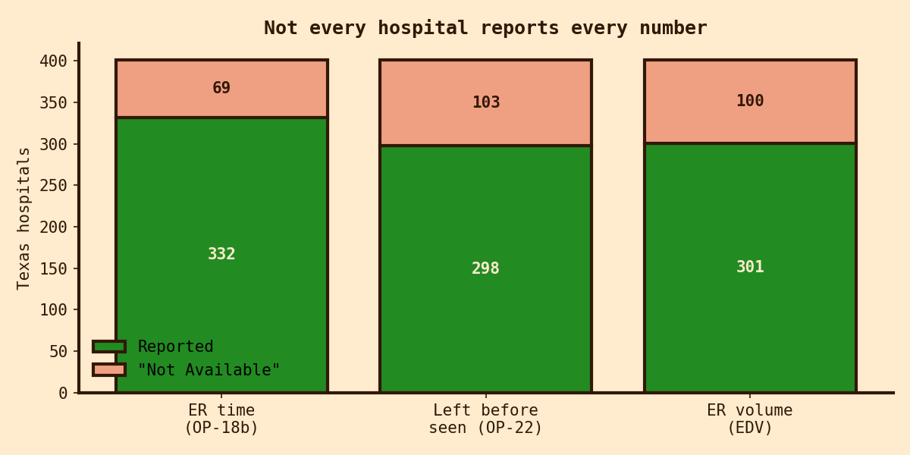
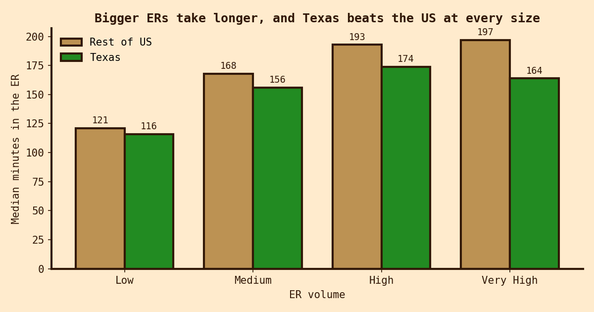
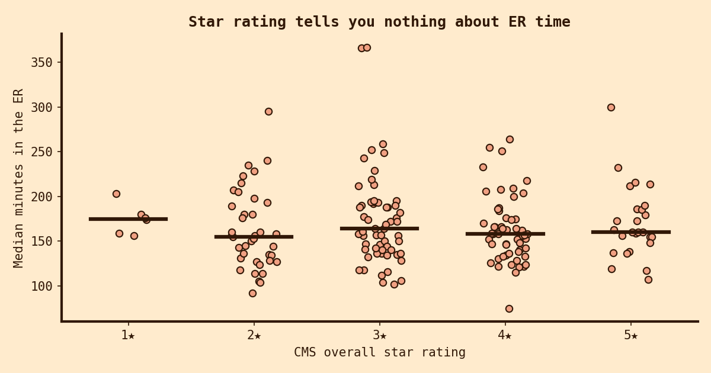
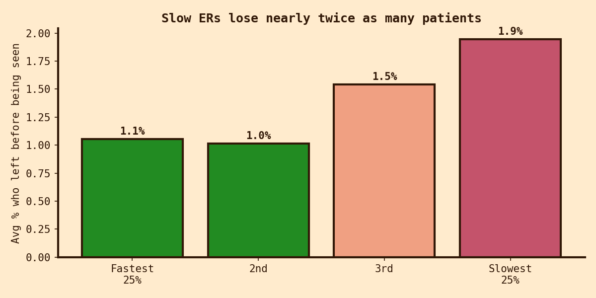
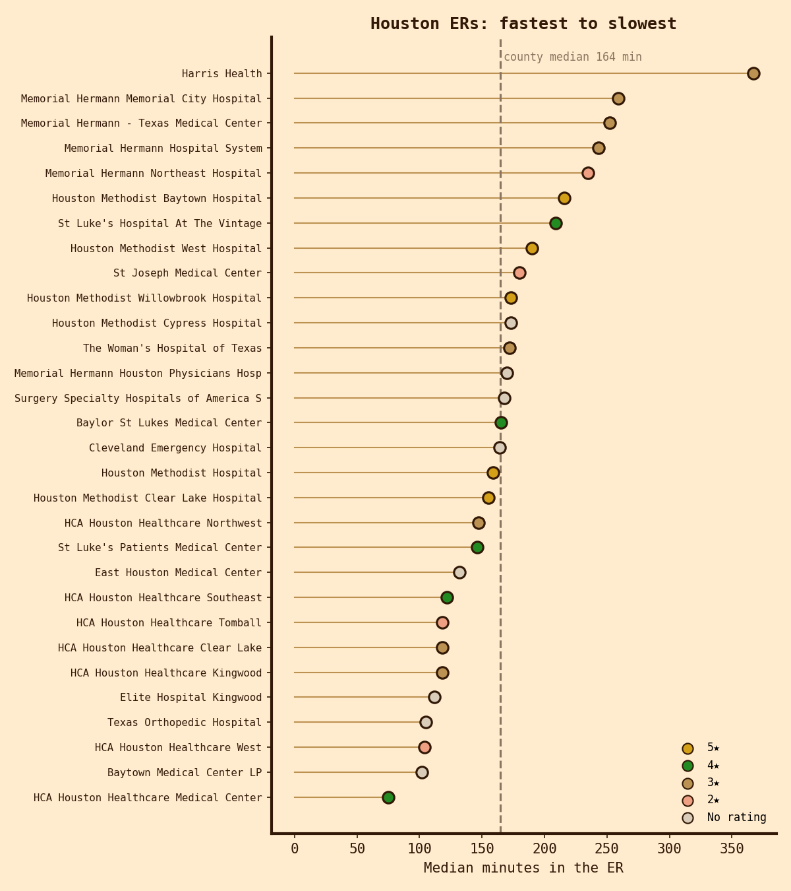

Everyone has an ER horror story. I wanted to know what actually predicts a long one, and whether the hospital ratings people look up tell you anything useful.
CMS, the federal agency behind Medicare, publishes emergency department numbers for nearly every hospital in the country. I focused on Texas and three measures:
I joined those to CMS's hospital directory for each hospital's 1-to-5 star rating, hospital type, and ownership.
Before any analysis, the first question was how much of this data is actually there. Plenty isn't. 69 of 401 Texas hospitals (17%) report no ER time at all, and 103 have no "left before being seen" number.

CMS marks every gap with a footnote code, so I looked up what each one means instead of guessing. Most missing values are footnote 5 ("results not available for this reporting period") or 19 (the hospital doesn't take part in CMS's quality reporting). All of those are treated as missing, never as zero, since a zero would read as the fastest ER in the state.
The trickier ones were 23 hospitals that do have a number but carry footnote 3: "results are based on a shorter time period than required." Those numbers are shakier, so I kept them but flagged them, then re-ran every headline result without them. Nothing changed.
One more wrinkle: 18 hospitals in the ER file don't appear in the hospital directory at all, most likely because they opened or closed between the two data releases. They stay in the ER-time analysis but can't be used for the star-rating comparison.
The strongest pattern in the data is size. Low-volume ERs run about two hours; high-volume ones run close to three. Small rural hospitals (CMS calls them Critical Access Hospitals) have a median of 111 minutes, versus 152 for standard acute care hospitals.
Texas's overall median beats the national one, and my first suspicion was that Texas just has more small hospitals pulling its average down. It doesn't. Comparing hospitals of the same size, Texas is faster at every tier, and the gap widens as ERs get bigger: very high volume Texas ERs run 164 minutes against 197 nationally.

This was the one I most wanted to test. If you're choosing an ER, is a five-star hospital a safer bet for a shorter visit? The data says no. The correlation between star rating and ER time is essentially zero (Spearman ρ = 0.02, p = 0.84), and it stays near zero even when comparing hospitals of the same size.

That isn't a knock on star ratings. They're built from mortality, safety, readmissions, and patient surveys, and they measure something real. They just aren't measuring how fast the ER moves.
The share of patients who leave without being seen climbs as ERs get slower. In the slowest quarter of Texas hospitals it's nearly double the rate in the fastest quarter. The absolute numbers are small, but every one of those is a person who needed care badly enough to go to an ER and didn't get it.

Harris County has 30 hospitals with ER data, and the ranking doesn't follow the star ratings at all. None of the five-star Houston Methodist hospitals make the county's fastest ten, while six of those ten are HCA Houston Healthcare hospitals rated two to four stars. The large Memorial Hermann hospitals cluster at the slow end, at around four hours.

At the very bottom is Harris Health, the county's public hospital system, at just over six hours. Across all of Texas, the only ER that comes close is University Health in San Antonio, which is Bexar County's public system. That's not a coincidence. County safety-net hospitals see the patients with nowhere else to go, often sicker and often uninsured, and many come in through the ER because it's the one door that has to stay open. Their ER times say as much about the region's healthcare gaps as about the hospitals themselves.